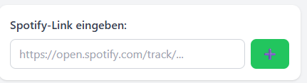
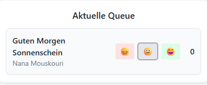

SpotifyPartyQueue ist eine leichtgewichtige Webanwendung, die es mehreren Nutzern ermöglicht, gemeinsam eine geteilte Spotify-Warteschlange zu verwalten. Teilnehmende können Titel über Spotify-URLs hinzufügen und darüber abstimmen, welche Songs als Nächstes abgespielt werden sollen – perfekt für Partys, Gruppenevents oder gemeinsames Musikhören.
Wie nutzt man SpotifyPartyQueue?
Wie füge ich einen Song hinzu?
- Suche den Song, den du hinzufügen möchtest, auf Spotify (nicht hier in dieser Anwendung!).
- Klicke auf die drei Punkte und wähle Teilen.
- Kopiere den Link.
- Füge den Link in die Suchleiste der SpotifyPartyQueue ein:

Wie stimme ich für einen Song ab?
- Suche den Song, für den du abstimmen möchtest, in der Aktuellen Queue der SpotifyPartyQueue (falls er noch nicht vorhanden ist, füge ihn wie oben beschrieben hinzu).
- Wähle ein Smiley, um abzustimmen (die Standardstimme ist neutral). Die Zahl rechts zeigt die aktuelle Gesamtbewertung des Songs an (je höher, desto besser).

- Der Song an der Spitze der Aktuellen Queue wird als Nächstes zur Spotify-Warteschlange hinzugefügt.
- Du kannst deine Stimme jederzeit ändern.